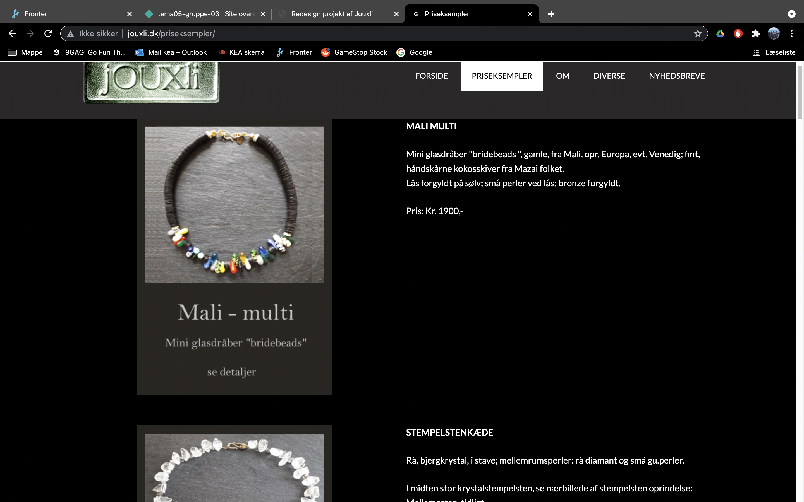
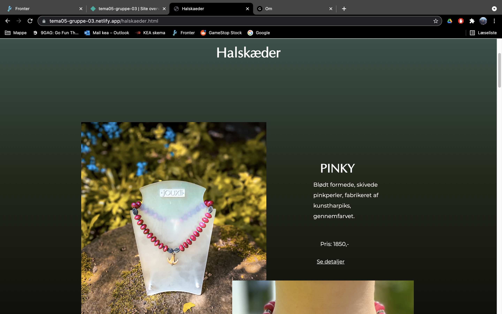
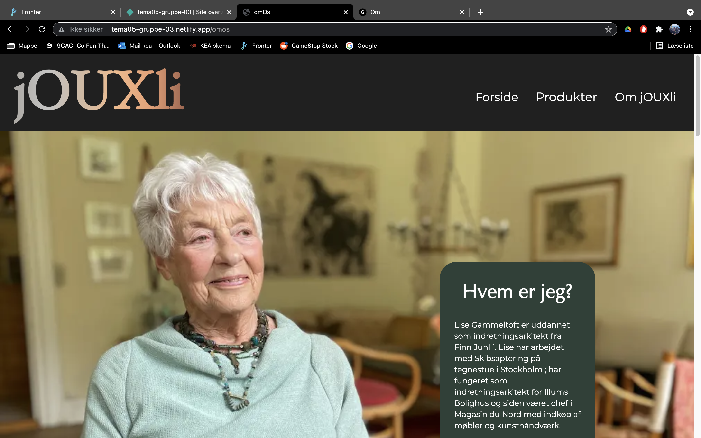

Grundlæggende indhold
Pilotprojekt

På semesterets sidste tema blev vi introcueret til indholds produktion samt content arbejde. Dette tema's hovedopgaver var et pilotprojekt og et redesign projekt. På pilotprojektet var opgaven at finde en person med en passion og præsentere dette gennem et en film/interview samt tilhørende filmplakat (hjemmeside).
Pilotprojekt hovedpunkter
- Redigering af inspirationsvideo
- Højformat- og bredformat fotos til website
- Fotos i webp format
- Indlejring af video (youtube-embed og HTML video-tag
- Benyttelse af google font eller @font-face
Proces
Arbejdet på pilotprojektet tog udgangspunkt i Sebastian Reves, og hans passion for styrketræning. Opgaven koncentrerede sig om at lave en god interview guide og klaregøre storyboad og anden forberedelse til optagelserne. Det blev tydeligt i denne opgave hvor vigtig forberedelsen er i processen.

Opgaven fungerede som en god introduktion til Adobe Premiere Pro. I denne del af processen blev der lagt vægt på at fremhæve kontrasten og de varme farver i billedet. Postproduktionen kunne generelt godt have manglet flere close-ups. I den efterfølgende redesign opgave var der mere fokus på at følge 5 shot sequencen, således man havde mere at gå ud fra.
Bemærkninger
Filmplakaten kunne have været blevet gjort mere dynamsik ved at ændre overskrifter og minimeret brug af tekst. Mængden af spørgsmål var i overkanten, hvilket gjorde det svære at udvælge og sortere i.
Se videoen og hjemmesiden her
Redesign
Redesign opgaven bestod i at finde en virksomhed og redesigne virksomhedens hjemmeside. Vi fik æren af at arbejde med Lise Gammeltoft og hjemmesiden: jOUXli.dk. Hjemmesiden skulle indeholde indholdsproduktion i form af tekst, video og billeder. Til slut skulle et processdokument afleveres, som dokumenterer gruppens arbejdsproces.
Redesign hovedpunkter
- Analyse af virksomheden
- Analyse af eksisterende site
- Planlægning og ideudvikling
- Indholdsproduktion
- Responsiv kodning af redesign
- Opsætning og benyttelse af Github
- Test af redesign
- Pitch af redesign
- Dokumentationsdokument
Proces
Gruppens arbejde startede ud med analsye delen. Her analyserede vi både Lises eksisterende site, samt hendes målgruppe. Analysen viste at vi havde at gøre med en snæver målgruppe (kvinder i 50-60+ alderen). Analysen af hjemmesiden blev foretaget primært med BERT-test og 5 sekunders test. Disse viste at hjemmesiden fremstod meget mørk og at brugere havde svært ved at identificere logoet.
Gruppen gik ind og redesignede hjemmesiden med følgende fokuspunkter.
- Læg vægt på det unikke, personlige ved hjemmesiden
- Introducer varme farver til sitet fx olivengrøn
- Funktioner og navigation nem og overskuelig
- Fotostil: Lyse billeder, fremhæve varme farver, introducer natur
- Luft mellem tekst/billeder
Før
Efter
Gruppen arbejdede i kontakt med Lise, så vi løbende fik vendt vores ideer og input. Her fik vi også mulighed for at filme Lise og hendes kunder. Det var vigtigt at sætte fokus på kunderejsen og det personlige showroom. Vi lavede en hero-video på forsiden for at indkapsle disse værdier. Tilsvarende lagde vi vægt på at få tekst og billeder spredt ud på siden, for at fremme følelsen af kvalitet hos produkterne.
Før

Efter
Min rolle i projektet
Jeg stod primært for forbedrelse til indholdsproduktion: Storyboard, interview spørgsmål osv. I forlængelse af dette havde jeg ansvaret for mange af optagelserne hos Lise. Mine opgaver inden for kodning var således at stå for om siden, footer og menu.
Bemærkninger
Overordnet god proces og struktur. I de indledende faser af processen dvælede gruppen for meget ved nogle design elementer, hvilket satte os lidt bagud. Dette gjorde os mindre fleksible efterfølgende, da et gruppemedlem blev syg. Vi blev rimelig tidspresset på afleveringen af dokumentation og måtte i den forbindelse træffe nogle hurtige beslutninger til sidst.
Analyse af redesign sitet viste en mindre forbedring i den BERT test der blev sendt ud. Grundet tidspres og den specifikke målgruppe fik vi ikke mange respondenter. Visioner for redesignet var at udvide hjemmesiden med en kontakt side og en form for gæstebog hvor kunder kunne skrive ind.
Udforsk vores redesign her
Se jOUXli's originale hjemmeside her